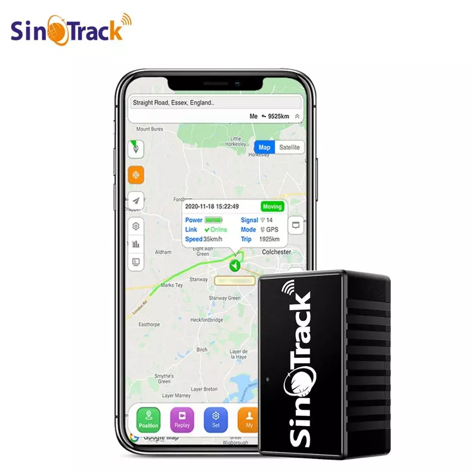
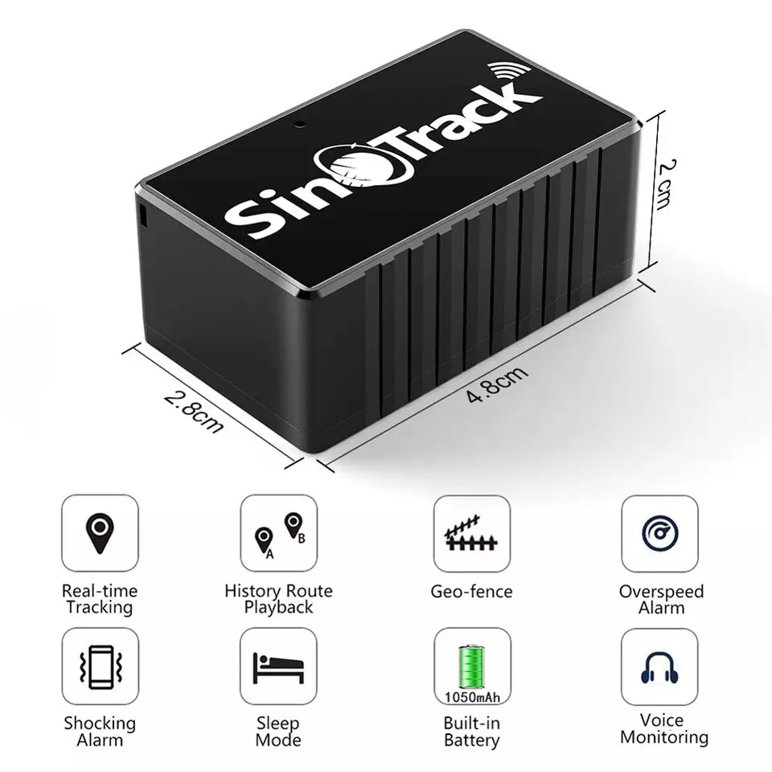
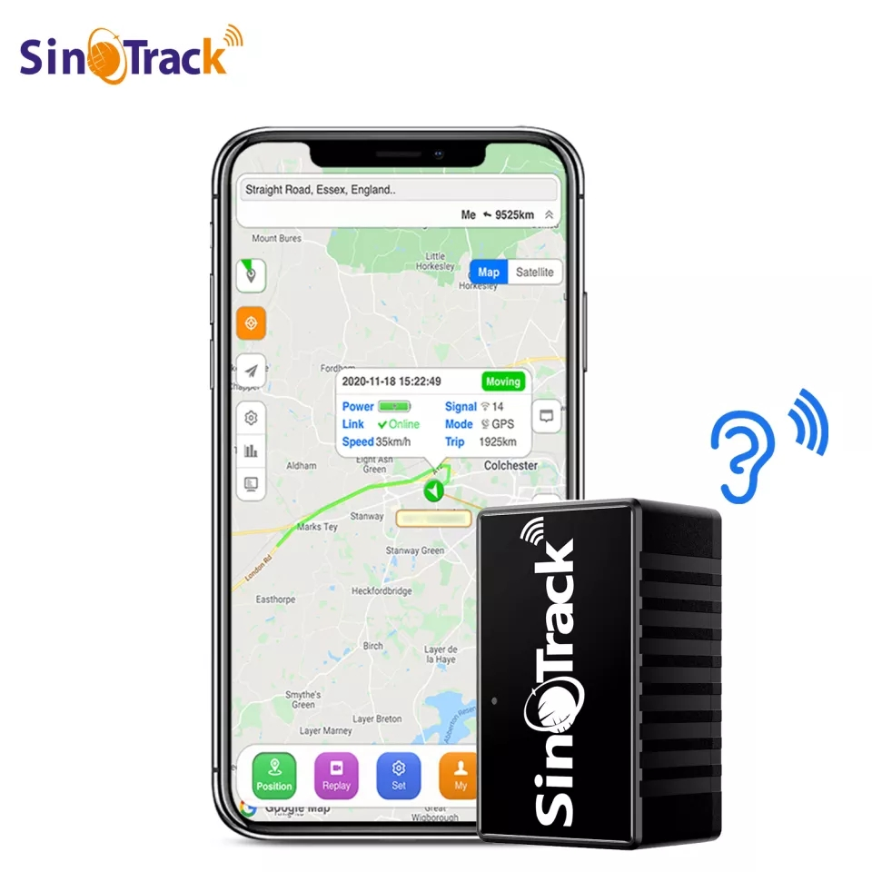
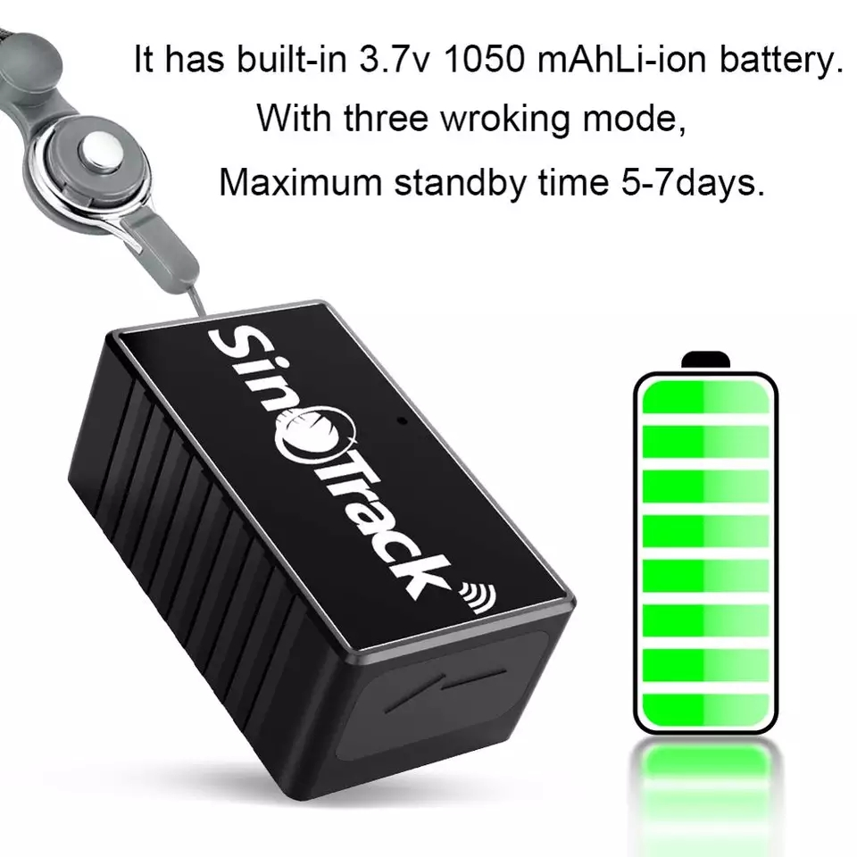
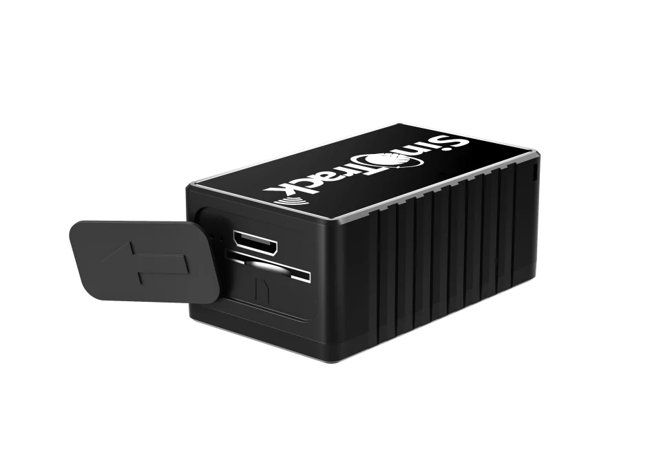
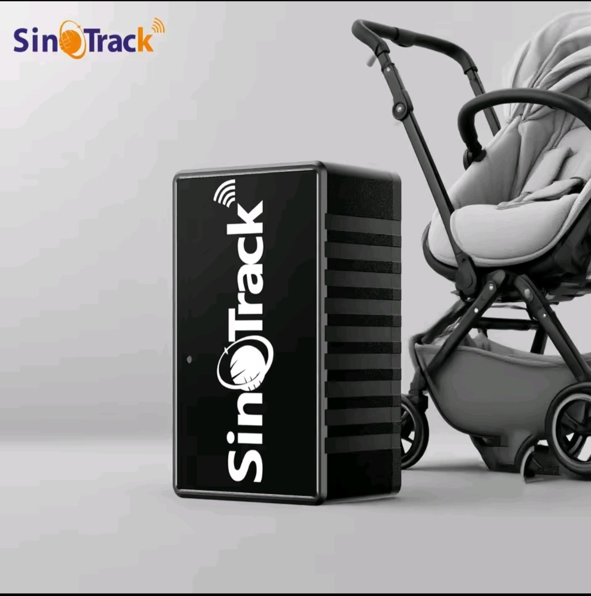
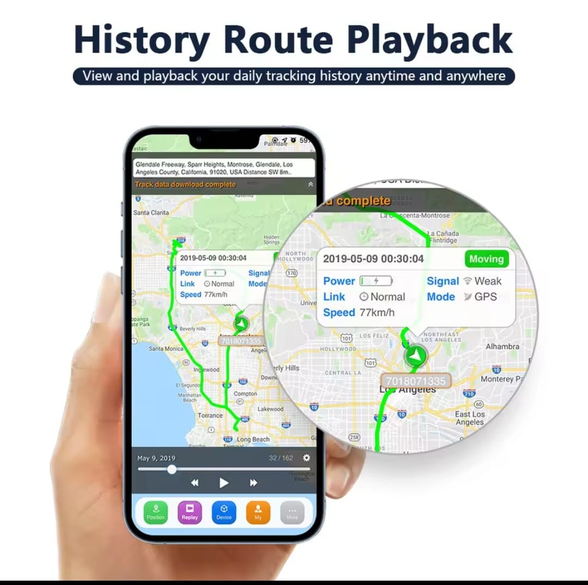
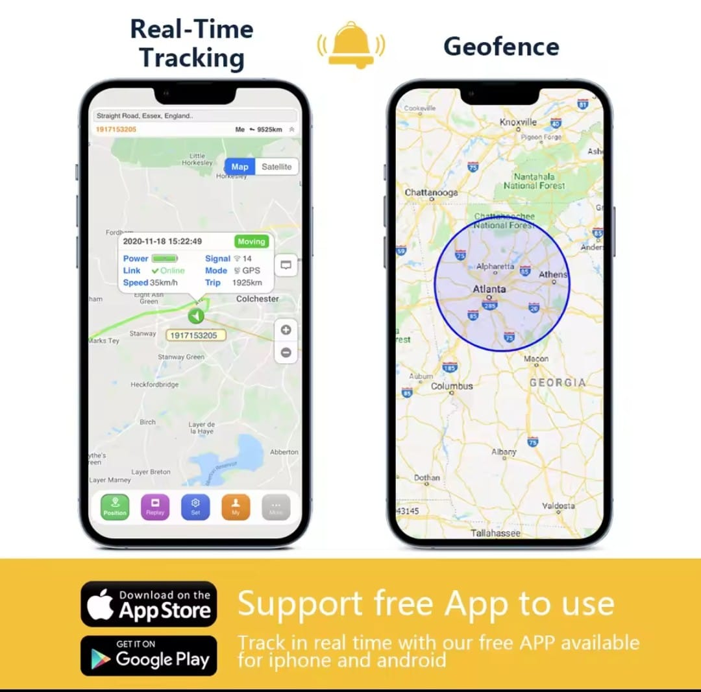
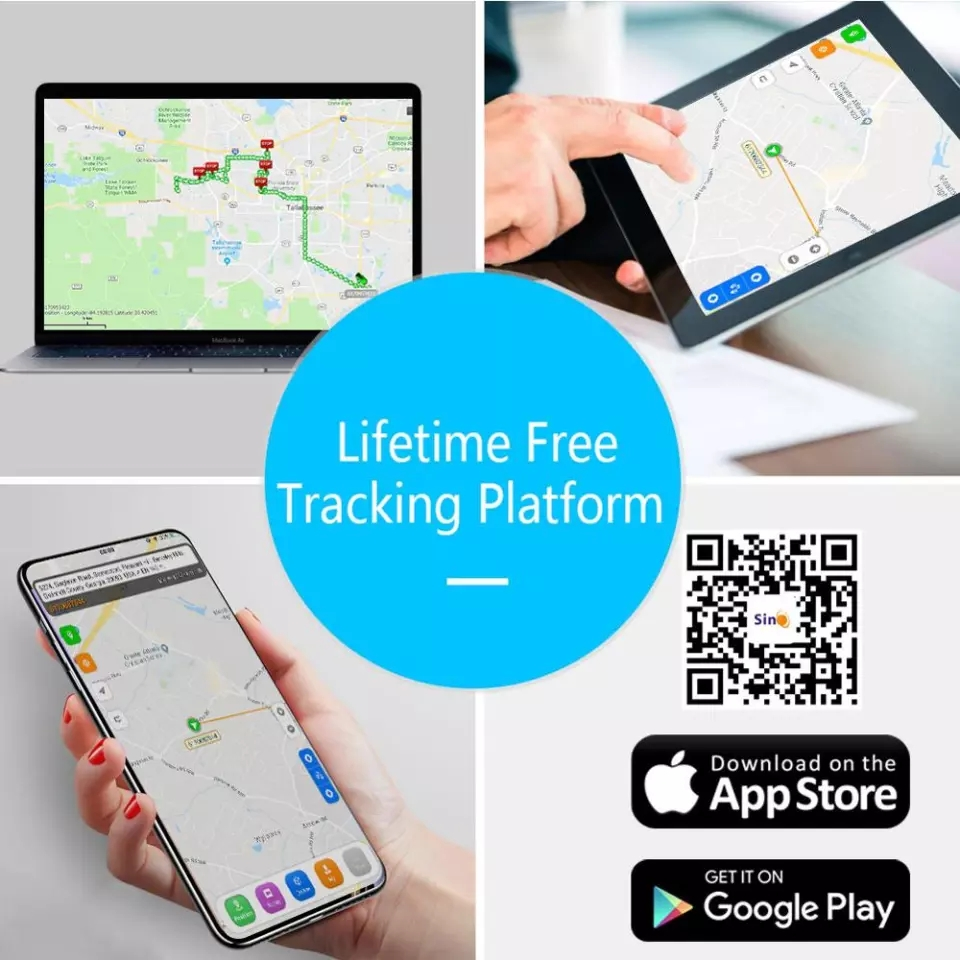

SinoTrack ST-903 Portable GPS Tracker is a compact tracking device designed for kids, elderly people, and vehicles. It provides real-time GPS location tracking, route history, and location monitoring through a mobile app, helping you stay connected with your loved ones and keep track of what matters most.
All Over Pakistan
Quality Guaranteed
Installation Help
Trusted Seller
Stay connected and enjoy peace of mind with the SinoTrack ST-903 Portable GPS Tracker, a compact and convenient tracking solution designed for children, elderly people, and vehicles. Its portable design makes it suitable for everyday use, helping you monitor location and improve personal safety. With GPS tracking and mobile app support, you can check the tracker's location remotely and review route history, depending on network coverage and device settings. Whether you want to keep an eye on your child's whereabouts, check on an elderly family member, or monitor a vehicle, the SinoTrack ST-903 offers a practical tracking solution.
| Model | SinoTrack ST-903 |
| Network | GSM / GPRS |
| GPS Accuracy | 5–10 Meters |
| Positioning | GPS + GSM |
| Tracking Methods | Android App, iOS App, Website & SMS |
| SIM Card | Standard GSM SIM |
| Backup Battery | Built-in Rechargeable Battery |
| Operating Temperature | -20°C to +70°C |
| Warranty | 1 Year |
Insert a working GSM SIM card with SMS and internet package. Download the SinoTrack App, scan the QR code or enter the device ID to start live tracking. Complete installation support is available from MM Trackers.
Yes. It works anywhere with GSM network coverage.
Jazz, Zong, Ufone and Telenor are all supported.
Yes. The ST-903 is a portable device , hence doesn't supports remote engine cut-off.
No monthly fee for the tracker itself. Only your SIM card's internet/SMS charges apply.